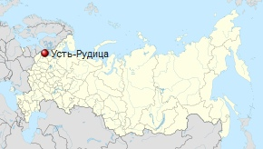

История Усть-Ру́дицы
Усть-Рудица — упразднённая деревня в Лопухинском сельском поселении Ломоносовского района Ленинградской области. Бывшая усадьба, позднее деревня при слиянии рек Лопухинка (ранее называлась Рудицей, ныне это название носит один из притоков Лопухинки) и Чёрная, принадлежавшая Михаилу Ломоносову. В деревне располагалась усадьба Ломоносова и открытая им фабрика по производству цветного стекла и смальты.
Зарождение Усть-Рудицы
В 1753 году мыза Усть-Рудица вместе с 4 деревнями (Шишкина, Калищи, Перекули, Липова) была пожалована императрицей Елизаветой «для делания изобретённых им разноцветных стёкол и из них бисеру и всяких других галантерейных вещей и уборов» Ломоносову. 6 мая 1753 Ломоносов заложил в Усть-Рудице фабрику по изготовлению цветного стекла и смальты. К 1754 фабрика начинает выпускать первую продукцию, которая завоёвывает успех у петербургских модниц.
Усть-Рудица на карте
Развитие Усть-Рудицы
В 1753—1765 годах на фабрике мозаичных стекол создано 27 портретов и картин, в том числе «Полтавская баталия».
В 1765 имение переходит жене Ломоносова, Елизавете Христине урождённой Цильх, а в 1768 переходит к их дочери Елене и становится наследственным владением. Позже имением владеют Константиновы, Раевские, Орловы. В гости к Николаю Раевскому сюда приезжал Пушкин.
Согласно 6-й ревизии 1811 года мыза Усть-Рудицы принадлежала подполковнику А. А. Константинову.
Деревня Усть Нижняя Рудица из 37 дворов, в ней мыза Рудицкая помещика Копачева и другая мыза Рудицкая помещицы Константиновой, упоминается на «Топографической карте окрестностей Санкт-Петербурга» Ф. Ф. Шуберта 1831 года.
Согласно 8-й ревизии 1833 года мыза Усть-Рудица с деревнями принадлежала жене генерала С. А. и её сестре Е. А. Раевским.
Согласно 10-й ревизии 1856 года мыза и деревня Усть-Рудицы принадлежали помещице Екатерине Николаевне Орловой. Согласно «Топографической карте частей Санкт-Петербургской и Выборгской губерний» в 1860 году деревня Усть-Рудицы насчитывала 46 крестьянских дворов. В деревне была кузница и водяная мельница.
В 1868—1869 годах временнообязанные крестьяне деревни выкупили свои земельные наделы у Н. А. Кириллова и стали собственниками земли
В 1869 году свои земельные наделы временнообязанные крестьяне выкупили у Е. Н. Орловой.
На 1884 год мыза была заселена в основном ижорой.
В XIX веке мыза административно относилась к Медушской волости 2-го стана Петергофского уезда Санкт-Петербургской губернии, в начале XX века — 3-го стана.
По данным «Памятной книжки Санкт-Петербургской губернии» за 1905 год, мыза Нижние Усть-Рудицы площадью 376 десятин принадлежала потомственному почётному гражданину Александру Александровичу Закревскому. Посёлки Усть-Рудицы и Юхцена площадью 4240 десятин принадлежали наследникам Н. М. Орловой.
К 1913 году количество дворов в деревне увеличилось до 63.
В 1919 году во время похода Юденича на Петроград усадьба была разгромлена, и главное здание сгорело.
С 1917 по 1923 год деревня входила в состав Усть-Рудицкого сельсовета Медушской волости Петергофского уезда.
С 1923 года, в составе Гатчинского уезда.
С 1924 года, в составе Нижнего сельсовета.
С февраля 1927 года, в составе Гостилицкой волости. С августа 1927 года, в составе Ораниенбаумского района
В 1928 году население деревни Усть-Рудицы составляло 275 человек.
Согласно топографической карте 1930 года деревня состояла из двух частей: Нижние Рудицы, которая насчитывала 16 дворов и Усть-Рудицы — 72 двора.
По административным данным 1933 года, деревня Усть-Рудицы входила в состав Нижнего сельсовета Ораниенбаумского района. Центром сельсовета являлась деревня Терентьево.
Согласно топографической карте 1938 года деревня состояла из двух частей: Нижние Рудицы, которая насчитывала 37 дворов и Усть-Рудицы — 54 двора. В деревне находилась почта, школа и часовня.
С 1 августа 1941 года по 31 декабря 1943 года деревня находилась в оккупации. В период блокады Ленинграда, деревня находилась на переднем краю обороны Ораниенбаумского плацдарма и была буквально стёрта с лица земли.
В период 1949—1953 годах на месте усадьбы работала археологическая экспедиция Академии наук СССР под руководством академика В. В. Данилевского, которой удалось установить местонахождение фабрики Ломоносова.
С 1950 года, в составе Лебяжского сельсовета.
В 1959 году место расположения бывшей фабрики объявлено памятником отечественной науки и техники и взято под государственную охрану, на месте главного корпуса была установлена памятная стела.
С 1963 года, в составе Гатчинского района.
С 1965 года, вновь в составе Ломоносовского района. В 1965 году население деревни Усть-Рудицы составляло 1 человек.
По данным 1966 года деревня Усть-Рудицы входила в состав Лебяжского сельсовета.
По данным 1973 года деревня Усть-Рудицы в составе Ломоносовского района не значилась.
В урочище Усть-Рудицы установлен памятник, напоминающий об уничтоженных деревнях Усть-Рудица и Нижние Рудицы.
Памятник Усть-Рудица
Современное состояние
По состоянию на 2011 год местность в районе Усть-Рудиц заброшена. Периодически её посещают туристы, иногда снаряжаются организованные экспедиции. Дороги к бывшей деревне грунтовые, через Лопухинку и Рудицу — с бродом; через Чёрную речку мост по состоянию на октябрь 2012 года отсутствует. По состоянию на июль 2014 года (если идти по грунтовой дороге от деревни Верхние Рудицы) мост через Лопухинку есть. На северном берегу Лопухинки возле этого моста памятник, свидетельствующий о том, что в сентябре 1941 года воины 168-й стрелковой дивизии не пропустили врага на север в жестоких боях.